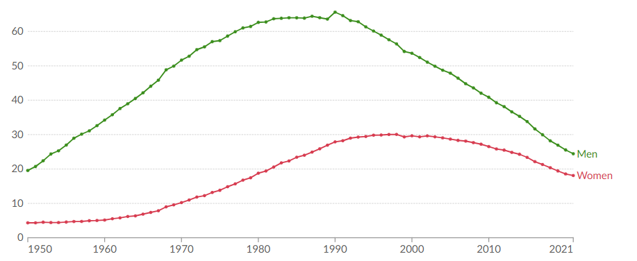
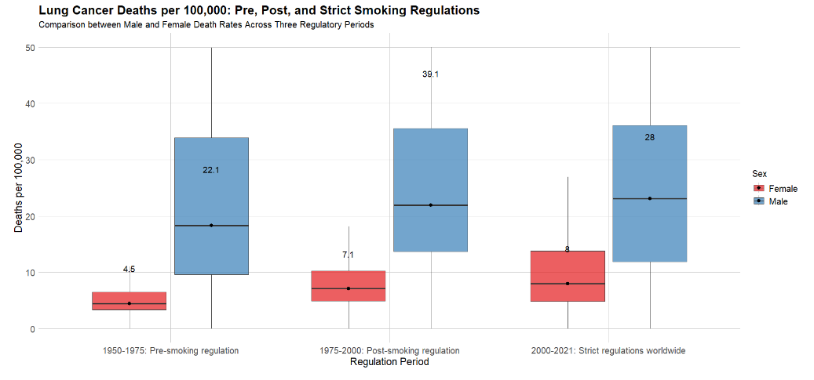
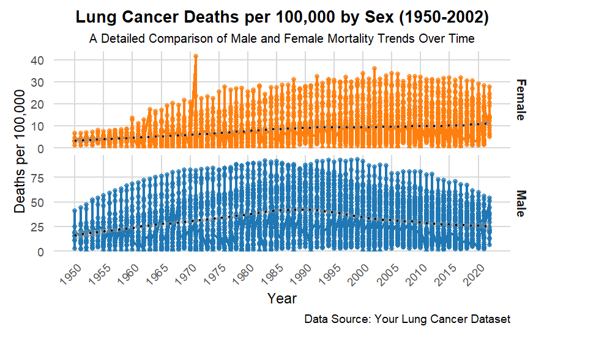
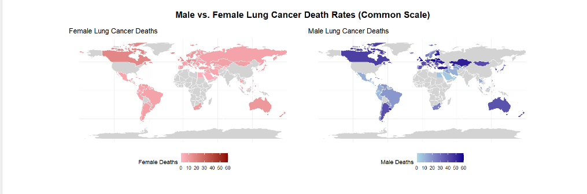
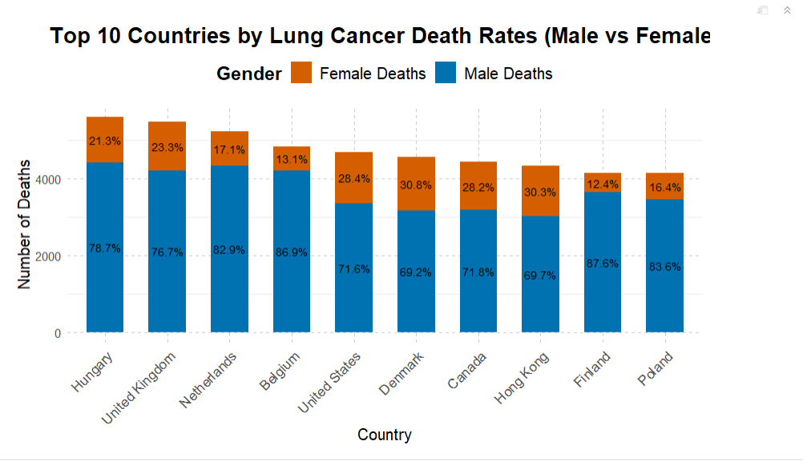

Project Insights and Visuals
lung-cancer-deaths-per-100000-by-sex-1950-2002
This project embarks on a deep dive into the historical data of lung cancer mortality spanning over five decades.
Using the extensive dataset from Lung cancer deaths per 100,000 by sex, 1950-2002 provided by Our World in Data, we analyze lung cancer death rates per 100,000 people, segmented by sex.
For a fun and quick walk through of our lung cancer data project (with visuals, of course!), check out the video below—because sometimes it’s better to see than to read.
About the Dataset:
- Data Source: Our World in Data, a widely respected platform known for compiling comprehensive and accurate global statistics.
- Time Range: This dataset spans from 1950 to 2021, providing a long-term view of lung cancer mortality trends.
- Sex Segmentation: The data is segmented by sex, allowing for detailed analysis of how lung cancer death rates have evolved differently for men and women.
- Global Reach: While the data set primarily focuses on historical data, it includes various countries, providing a broad perspective on how different regions have been affected by lung cancer.
Key Insights:
- Historical Trends: The data set shows significant trends in lung cancer mortality over five decades, highlighting periods of increase and decline.
- Policy Impact: The data reveals the impact of public health policies and smoking regulations on lung cancer mortality rates.
Project Goals:
- Original Visualization

- The original visualization lacks depth despite offering basic gender comparisons, as it over simplifies historical trends without providing context for key factors like smoking policies. Additionally, while the data aids comparison, the absence of detailed annotations for significant events weakens its ability to convey deeper insights into the shifts in lung cancer death rates over time.
Re Visualization 1 : Boxplot of Lung Cancer Deaths per 100,000 by Sex Across Smoking Regulation Periods (1950-2021)
- This approach highlights the distribution, medians, and variability of lung cancer deaths by sex within each period, providing deeper insights that were not as evident in the original visualization. The boxplot allows for a clearer comparison of death rates across genders, emphasizing how policy changes influenced lung cancer mortality rates over time.
1950-1975: Pre-smoking regulation
- For the pre-smoking regulation period (1950-1975), the median death rates show stark differences males had a median of 22.1 deaths per 100,000, while females were significantly lower at 4.5 deaths per 100,000. This suggests that lung cancer was already a significant health issue among men before regulations were implemented.
1975-2000: Post-smoking regulation
- When we move into the post-smoking regulation period (1975-2000), we see that male deaths jumped to a median of 39.1, and female deaths rose to 7.1. This increase might indicate that while regulations were introduced, it took time for the full effects to manifest, or perhaps the cultural attitudes toward smoking began shifting during this time, impacting both sexes.
2000-2021: Strict regulations worldwide
Finally, in the strict regulation period (2000-2021), the median death rates adjusted to 28 deaths per 100,000 for males and 8 deaths for females. It’s interesting to note that while male rates decreased compared to the previous period, they still remained higher than the pre-regulation era, suggesting ongoing challenges. For females, the increase is much more modest, hinting at the potential success of stricter regulations in controlling the disease.
Overall, this visualization underscores how significant regulatory changes can influence lung cancer mortality rates and highlights the importance of continued efforts in tobacco control.

you can find the code for this here Re Visualization 1
Re Visualization 2 : Faceted Line Plot Gender-Specific Lung Cancer Mortality Trends
This re-visualization dives into lung cancer death rates per 100,000 people by sex from 1950 to 2002. By reshaping the data into a longer format, we can easily compare trends between males and females over the years.
The facet grid layout separates male and female death rates, making it clear how they differ. Thicker lines and emphasized points enhance visibility, while a dotted black LOESS trend line shows overall patterns without the noise of yearly fluctuations. The free y-axes allow for an accurate portrayal of mortality rates, revealing that males consistently experience higher death rates, especially in earlier years.
This visualization effectively highlights historical trends in lung cancer mortality, showcasing significant differences between sexes and opening the door for discussions about public health policies and the ongoing need for research into lung cancer prevention and treatment.

you can find the code for this here Re Visualization 2
Re Visualization 3 : Choropleth Maps (for Male and Female Lung Cancer Death Rates)
In this redesign, I have replaced the original line chart with a global map visualization that compares lung cancer death rates by gender across different countries.
This approach offers several improvements over the original.Firstly, it adds geographical context, allowing users to see global disparities in lung cancer death rates that were not evident in the original time series chart.
separate color scales for male and female death rates make gender comparisons clearer, while the inclusion of maps makes it easier to spot regional patterns.
Additionally, the clean layout, with maps for both genders side-by-side and a unified scale, offers a more intuitive comparison of death rates, enhancing overall comprehension.
By visualizing the data geographically, the redesign provides deeper insights into how lung cancer death rates vary not just over time, but across the world.

you can find the code for this here Re Visualization 3
Re visualization 4: stacked bar chart
- The stacked bar chart provides a clearer, more direct gender comparison, showing the proportion of male and female deaths in each country with percentage labels which the original lacks. -It also enhances cross-country analysis, enabling viewers to compare multiple countries at a glance.

you can find the code for this here Re Visualization 4
Re visualization 5: Global Male Lung Cancer Mortality Map
This visualization maps global male lung cancer death rates using a gradient color scale, with darker blue representing higher death rates and lighter blue indicating lower rates, while grey marks countries with missing data.
The static map features a clean design with clear borders and a bottom legend while the interactive version enhances exploration by allowing users to hover over countries for specific death rates and country names. This interactivity, combined with a well-chosen color gradient, makes it easy to compare data across regions and visually highlight variations in mortality rates.
you can find the code and output for this here Re Visualization 5
since this is an interactive graph we have presented the code and the output in the Code.qmd file.